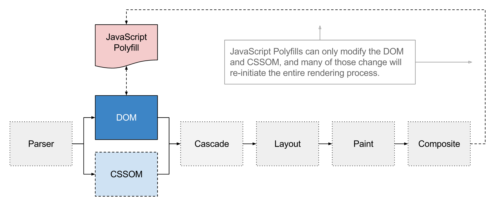
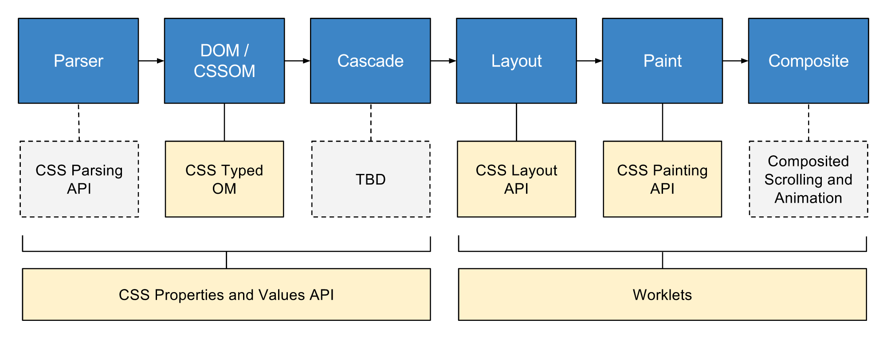
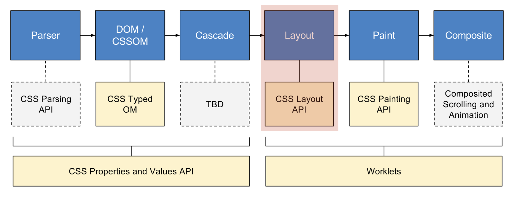

CSS Houdini
概述
到目前为止（2017-10-05），JS 只能改变浏览器渲染过程中的 DOM 和 CSSOM，而无法去改变后面 layout、 painting 和 composite 的进程。这样当 CSS 新技术出现的时候，开发者就只能眼睁睁的看着老浏览器不支持而无能为力了，因为浏览器并没有提供相应的接口让开发人员去进行 polyfills。
这不 CSS Houdini 就打算把整个渲染过程都打通，让 JS 参与进来。那样未来的 CSS 就有了更多的可能。
当前状态，JS 能力有限：

CSS houdini 蓝图：

CSS Layout API
CSS houdini 蓝图中其中有一块是 CSS Layout API，如下红色圈起来部分：

这样就让 JS 改变 layout 这个进程有了相应的接口，这就为 CSS 的布局实现了无限想象的可能，比如瀑布流布局。
现在假设要实现一个居中的布局，那么就可以先用 JS 注册一个 centering 布局：
registerLayout('centering', class extends Layout {
static blockifyChildren = true;
static inputProperties = super.inputProperties;
*layout(constraintSpace, children, styleMap) {
// 处理代码
...
// return
return {
inlineSize: inlineSize,
blockSize: blockSize,
inlineOverflowSize: maxChildInlineSize,
blockOverflowSize: blockOverflowSize,
childFragments: childFragments,
}
}
});
然后在 CSS 中调用该布局：
.centering {
display: layout(centering);
}
详细可参考：CSS Layout API Explained。
总之有了该能力之后，以后要搞什么布局，或者出现什么新的布局技术，开发人员都可以通过 JS 来注册一个布局完成该效果或去兼容浏览器。
当然由于目前 CSS houdini 还是草稿状态，也没有浏览器实现该功能，所以继续保持关注，一起期待那天的到来。